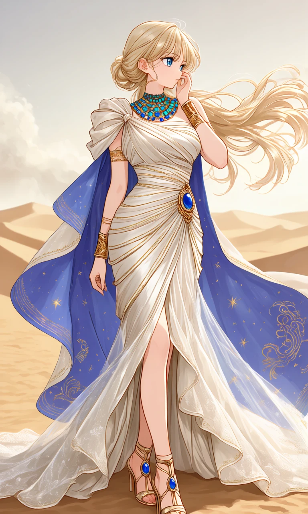
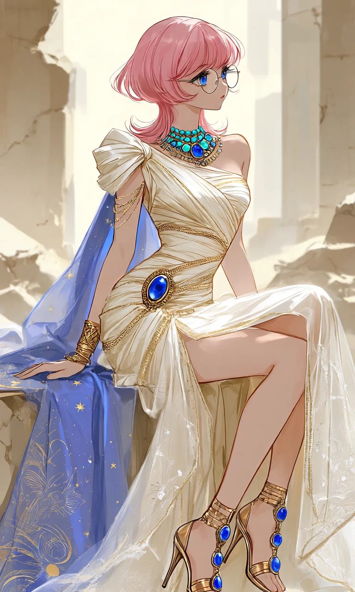

Lapis Afterglow

Outfit Prompt
A luxurious ancient Egyptian and mummy-inspired haute couture evening gown featuring a sophisticated asymmetrical draped silhouette, crafted from warm ivory and champagne-colored fine linen with delicate honey-gold silk accents.
The sculpted, fitted bodice features multiple overlapping narrow linen bands wrapping diagonally across the bust and waist, creating intricate layered fabric wrapping reminiscent of elegant ceremonial bandages. The tightly wrapped waist emphasizes a graceful hourglass silhouette, with delicate golden woven threads and intricate gold stitching incorporated throughout the fabric.
The gown features an asymmetrical one-shoulder design, with luxurious draped linen gathered into a large decorative fabric knot on one shoulder, leaving the opposite shoulder and arm bare.
The high-waisted asymmetrical skirt features a dramatic thigh-high opening, revealing elegant overlapping linen layers beneath. A long, flowing sheer ivory overskirt adds softness and movement, with delicate translucent fabric panels, subtle sparkling resin-like embroidery, and fine golden stitching decorating the edges.
A long detachable trailing shroud extends behind the gown, featuring a luxurious deep lapis-blue inner train decorated with delicate golden stars and intricate celestial embroidery. The contrasting blue lining creates a striking accent against the warm ivory and champagne-colored fabrics.
An ornate oval gold clasp featuring a large polished lapis-blue gemstone decorates the hip, securing the layered draping and adding an elegant Egyptian-inspired ornamental detail.
Accessories include a luxurious layered Egyptian-inspired beaded collar necklace featuring turquoise and lapis-blue gemstones, intricate engraved gold cuff bracelets, and delicate gold arm jewelry.
Elegant gold strappy high-heeled sandals feature slender metallic straps and beautiful lapis-blue gemstone ornaments.
The complete ensemble combines luxurious ancient Egyptian royal influences with sophisticated mummy-inspired fabric wrapping, delicate textile craftsmanship, graceful flowing materials, and refined haute couture elegance. The warm ivory, champagne, honey-gold, turquoise, and deep lapis-blue color palette creates a regal, sensual, and sophisticated evening gown.
Outfit Examples



